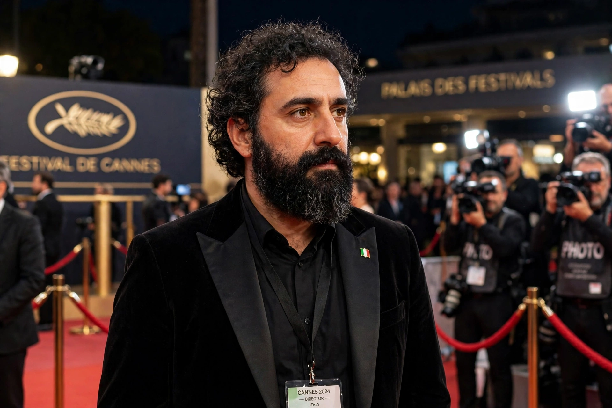

| Paolo Sorrentino | |
|---|---|
 Sorrentino at Cannes | |
| Born | 31 May 1970, Naples, Italy |
| Occupation | Film director, screenwriter, novelist |
| Years active | 1998–present |
Paolo Sorrentino (born 31 May 1970) is an Italian film director, screenwriter and writer, widely considered the leading Italian filmmaker of his generation. His film The Great Beauty (2013) won the Academy Award for Best Foreign Language Film, and he created the acclaimed television series The Young Pope (2016) and The New Pope (2020).
Born in Naples, Sorrentino lost both parents in a gas accident at the age of 16, an event reflected in his autobiographical film The Hand of God (2021). After a short career in banking he turned to screenwriting; his feature debut as director was One Man Up (2001). The Consequences of Love (2004) and Il Divo (2008), a portrait of prime minister Giulio Andreotti, established his reputation at Cannes, where his films became a fixture. This Must Be the Place (2011) was his English-language debut, with Sean Penn.
The Great Beauty, starring his frequent collaborator Toni Servillo as a ageing Roman socialite, revived comparisons with Fellini. Later works include Youth (2015), Loro (2018), a portrait of Silvio Berlusconi, The Hand of God (2021), which won the Grand Jury Prize at Venice, and Parthenope (2024).
Sorrentino is known for lush, baroque cinematography, sweeping camera movements, pop-music soundtracks, and themes of power, decay, loneliness and lost youth.